简介Introduction
作者：孙老师
说明：本课程为孙老师的
Python的基础教程讲义，主要面向10岁以上的学生群体，课程的设计参考了电子学会的Python考级的设定，内有大量的计算机和编程的基础。帮助有意向去参与考级的学生能顺利通过每一级考试。 如果你是一名大学生，或者你已经掌握了其它编程语言，想学习Python，那么本课程并不适合你。
引言
1. 什么是编程
编程的就是让计算机代码解决某个问题，对某个计算体系规定一定的运算方式，使计算体系按照该计算方式运行，并最终得到相应结果的过程。通俗地去理解，就是用某种计算机程序设计语言编写一个程序让计算机帮助我们完成某件工作、达到某种目的或解决某个问题。当程序员们把程序有机地结合到一起之后，再做一些深度的加工，就形成了我们常说的软件。
在互联网技术高速发展的今天，由计算机编写的程序或者软件已经和我们的生活方方面面有了很大的关系，对社会的发展起到很大的推动作用。比如，为了帮助人们更加快速地处理工作中的文档，Microsoft公司开发了Office办公软件；为了娱乐，很多游戏公司开发了各种各样的游戏软件，像大家比较熟悉的王者荣耀、吃鸡等；又或是为了满足远程的沟通需求，QQ、微信、钉钉等等不同的通讯软件也被开发了出来......
2. 计算机编程语言
计算机编程语言是程序设计的最重要的工具，它是指计算机能够接受和处理的、具有一定语法规则的语言。从计算机诞生，计算机语言经历了机器语言、汇编语言和高级语言几个阶段。
机器语言
机器语言指令是一种二进制代码,由操作码和操作数两部分组成,是机器能直接识别的程序语言或指令代码，无需经过翻译，每一操作码在计算机内部都有相应的电路来完成它，或指不经翻译即可为机器直接理解和接受的程序语言或指令代码。
它大概的样子如下(纯粹由孙老师胡乱编写的，理解意思即可)
1011100111010001011010101001011010100001010001000101011001010101010
0111000101001001011101100101101010101010101010010101010100101001101
1011110101111110101000001101010101011000000001110101011001011011101
0000111111100010100010001111010010001110110000110101000101011001001
汇编语言
汇编语言， 即第二代计算机语言,属于低级语言，用一些容易理解和记忆的缩写单词来代替一些特定的指令，例如：用ADD代表加法操作指令，SUB代表减法操作指令，MOV代表变量传递等等。然而计算机的硬件并不认识字母符号，这时候就需要一个专门的程序把这些字符变成计算机能够识别的二进制数或机器语言。但是由于各个机器的指令集是不同的，所以汇编语言要和特定的机器指令集一一对应对能正常运行。
下列是一段汇编语言的例子：
MOV AX, X
MOV BX, OFFSET X
MOV CX, 9
L1: INC BX
INC BX
CMP AX, [BX]
JAE L2
XCHG AX, [BX]
L2: LOOP L1
MOV Y, AX
高级语言
高级语言是独立于机器的一种面向过程或者面向对象的计算机编程语言, 语法结构参照了数学语言而设计的, 读起来近似于日常的会话。 比如要把两个变量的值相加，用高级语言的表达为 var1 + var2。 所以高级语言比低级语言更具有可读性, 更容易被理解。
目前常见的高级语言有： C语言、 C++、 VB、 C#、 Java、 Python、 Go lang、 Delphi, PHP等等。
下列是一段高级语言的例子（Python）:
_lenght = float(input("Please input the lenght of Square:"))
_width = float(input("Please input the width of Square:"))
_area = _length * _width
print("The area of the Square is %.2f" %_area)
高级语言并不能直接被机器执行，而要经过一系列的编译或者解释的过程，转换成机器能够直接理解的机器语言之后，才能被运行。
Python简介
Python由荷兰数学和计算机科学研究学会的吉多·范罗苏姆于1990年代初设计，作为一门叫做ABC语言的替代品; 是一门简单，易学, 开源的高级语言。
- 学习难度低，不需要太高的基础
- 解释型语言，可移植性高，不需要考虑机器的差异
- 代码规范性高，可读性强
- 面向对象语言，函数式编程
- 可粘合其它语言开发的系统，被称作“胶水语言”
- 生态圈强大，可应用的领域有软件开发、后端开发、数据科学、人工智能、机器学习、数据采集等
在正式学习之前, 给各位同学提几个建议
- 学习过程中，尽量用英语表达各种输出
- 多做练习
- 不要怕犯错，学会理解解释器抛出的各种异常信息
- 遇到问题时，先自己想办法找解决方案
安装Python
在开始学习Python编程之前，首先要在自己的计算机上安装Python的解释器环境。 Python的解释器有好多种，如IDLE、 VS Code、 Pycharm, Jupyter NoteBook等等。这里我们选择使用官方提供的解释器IDLE做为我们学习Python的环境。
Windows系统
Python的官方网站为python.org, 在登录之后，点击Download，并选择Windows。

这里我们选择Python3.x版本， 因为2.0版本已经不再更新维护，未来3.0版才是主流版本。

点击进入下一个页面之后，找到Files部分, 根据自己系统的版本选择32-bit还是64位的安装包。

这里也提供了两个安装包的下载链接，可以点击下载:
如何查看自己计算机系统版本是32位还是64位?
在计算机桌面下方的工具栏中点击开始菜单，在Windows系统文件夹下找到控制面板，并打开:在控制面板里，依次点击【系统和安全】->【系统】，就能打开系统信息面板查看自己系统的信息。
下载好Python的编译器安装文件之后，双击打开Python环境的安装向导，选择自定义安装，切记一定要勾选“Add Python 3.X to PATH”，否则需要手动添加环境变量，会比较麻烦。


安装完成之后，打开Windows的命令提示符或者PowerShell, 输入python -V或者python --version，如果返回了Python解释器的版本，例如“Python 3.10.7”, 说明安装已经成功。

MacOS环境
MacOS系统是自带Python 2版本的，但是我们需要学习的是Python 3版本，可以参考上面的方法，在官方的下载页面找到对应的版本下载，并安装即可。
需要注意的是，在MacOS的终端直接执行python，调用的是Python 2版本的解释器。想要调用Python 3，必须输入python3。
第一个Python程序： hello, world
上一章节，我们了解了Python的特性和生态，也学会了如何在自己的计算机上安装Python的官方解释器。接下来我们正式开启Python编程的学习。
但：
所有的代码编写必须都要用英文输入法！！！
所有的代码编写必须都要用英文输入法！！！
所有的代码编写必须都要用英文输入法！！！
重要的事情说三遍；除了字符串的内容，所有的编程语言必须用英文输入法编写代码，包括包围在字符串左右两边的引号（单引号和双引号）。
IDLE
我们要使用的集成开发环境是官方提供的IDLE，在正式学习之后，要知道该怎么打开它。
点击 【开始】 菜单，找到安装的 【Python 3.x】 文件夹，点击 【IDLE】 打开它：
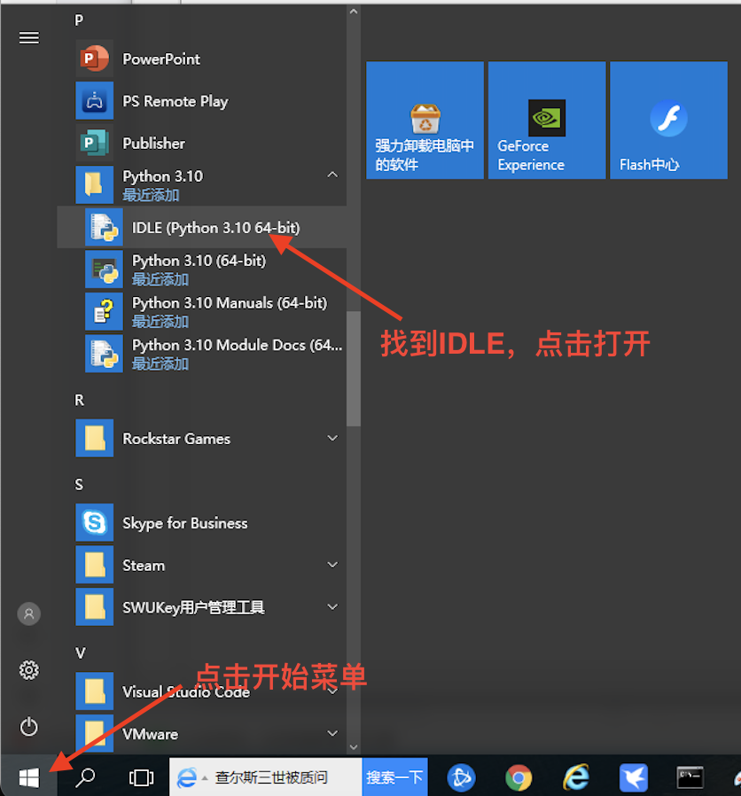
如下图，我们可以看到这个简单甚至简陋的Python自带的IDLE的界面；它会在本教程伴随我们一直到最后。
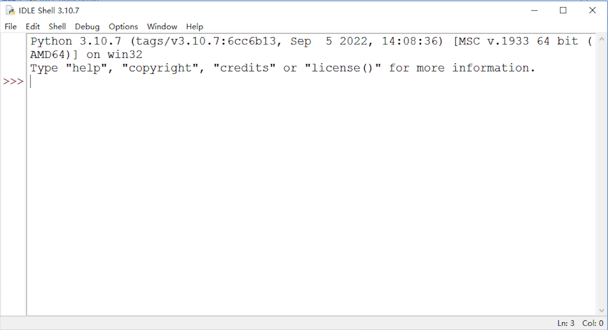
从IDLE的界面，我们可以看到Python的版本信息以及当前的运行环境信息，同时也有一些提示命令。
在上述信息的下方，我们看到>>>这样的符号，这个是Python语句输入的提示符，它的后面会有一光标在不停地闪烁，表示我们在该位置可以输入命令或者代码。
hello, world
几乎在学习所有编程语言的最初，都会让我们先学会写一个简单的程序输出hello, world这样一句话，因为这段代码是伟大的丹尼斯·里奇（C语言之父，和肯·汤普森一起开发了Unix操作系统）和布莱恩·柯尼汉（awk语言的发明者）在他们的不朽著作The C Programming Language 中写的第一段代码。Python也并不例外，但是在Python中，不需要像有些语言那样先构造一个复杂的语法结构，我们只需要下面一行代码就可以实现：
print("hello, world")
IDLE给我们提供了两种编程环境，帮助我们去学习Python语言，它们分别是交互式环境和文本编辑环境，我们下面结合这两种编程环境的介绍，来完成我们在Python中的第一个程序。
交互式环境
交互式环境的意思就是，我们输入了一行代码，敲击回车键之后，代码会马上被执行, 如果执行的代码有结果生成，那么这个结果会直接显示在窗口里。
我们打开IDLE之后所看到的界面就是一个交互式环境，我们可以在输入提示符之后，输入代码再回车(#后面的内容不需要输入)：
>>>print("hello, world") #输入完成后敲回车
#下面一行为输出的结果
hello, world
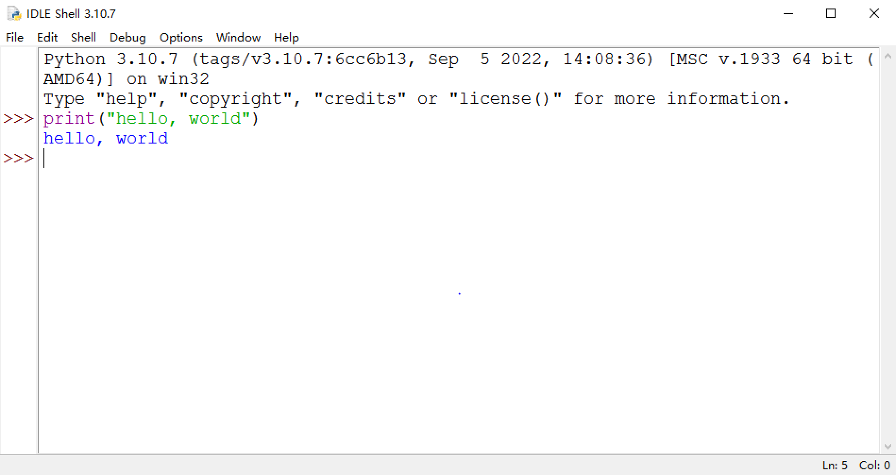
这里需要注意的是，我们只能在最后一个输入提示符>>>之后输入代码，即使在这之前有很多个>>>并没有我们输入的内容，就算是把光标移过去也是不可以的。
交互式环境的编程有很大的局限性，因为他每次只能写一行代码，或者是一个代码块，当我们要写的程序行数很多的时候就会很麻烦，一旦写的代码有错误，不能回去修改，只能重写。但是交互式编程并不是不可取的，它能够快速把代码执行的结果反馈出来，在这一点上是很便利的。
文本编辑环境
文本编程是指在文本编程器中编写代码并保存成文件之后，通过编程器编译成可执行的程序文件，或者通过解释器直接执行该程序文件的一种编程方式，文本编程也可以被叫作脚本式编程或者文件式编程，这种编程方式要求代码必须编写成一个纯文本文件，不能含有除了代码之外的任何信息。所以它对编辑文本的工具软件是有要求的，比如Windows系统中自带的记事本就可以进行代码的编写，然而写字板或者Office套件中的Word就不可以，因为这两种软件保存的文件中包含了其它除代码之外的内容。
IDLE中同样提供了这样的文本编辑环境，可以根据下列步骤进行操作：
-
在IDLE的菜单栏中，选择 【File】, 然后点击 【New File】 打开一个文件编辑窗口:
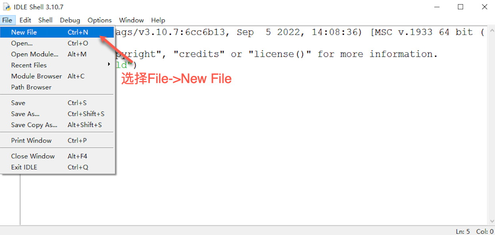
-
在打开的文件编辑窗口之后，输入代码
print("hello, world")：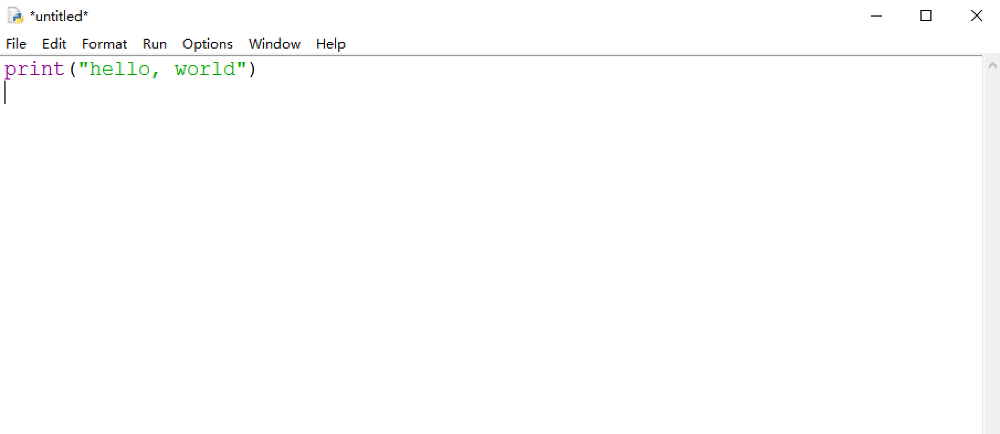
-
完成代码编写之后，保存文件，在菜单栏中 【File】, 然后点击 【Save】，然后输入保存的文件名字，一定要注意 【保存类型】 一定是 Python files(.py;.pyw,*.pyi) :
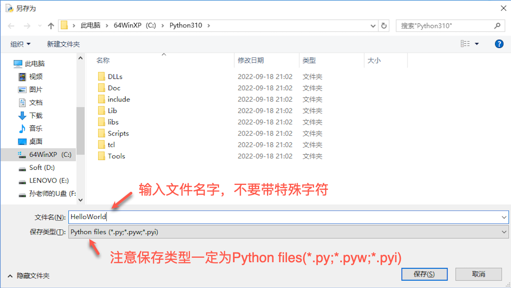
-
保存好文件之后，就可以运行程序了，在菜单栏中选择 【Run】, 然后点击 【Run Module】 就可以了，该操作的快捷键为 F5:
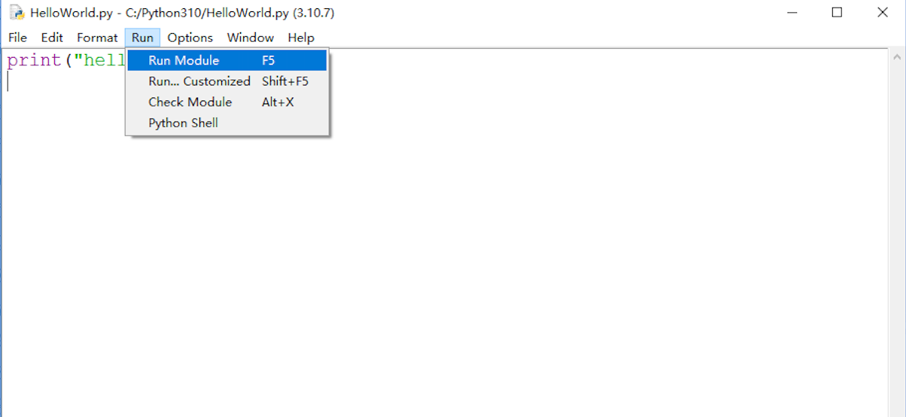
-
运行完成之后，结果会输出在IDLE中：
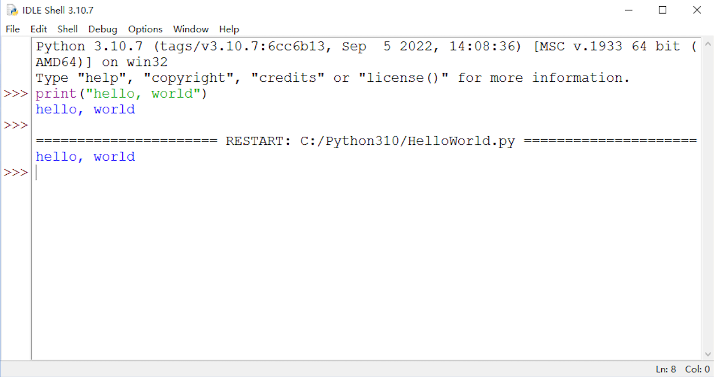
文本式编程是一种比较灵活的编程方式，一旦我们编写完代码运行之后发现了错误，就可以重新打开文件去修改：
-
在菜单栏中，选择 【File】，点击 【Open】:
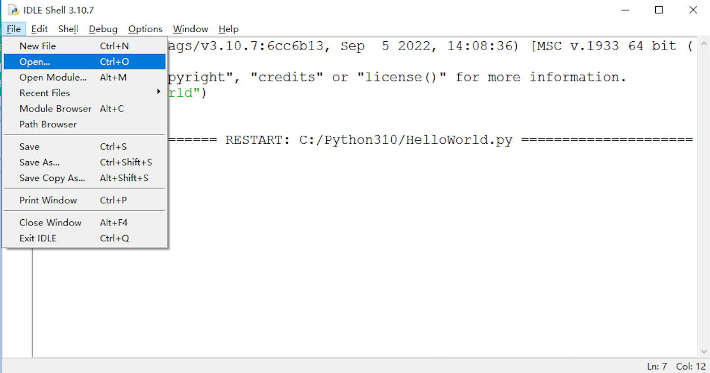
-
选择要打开的文件:
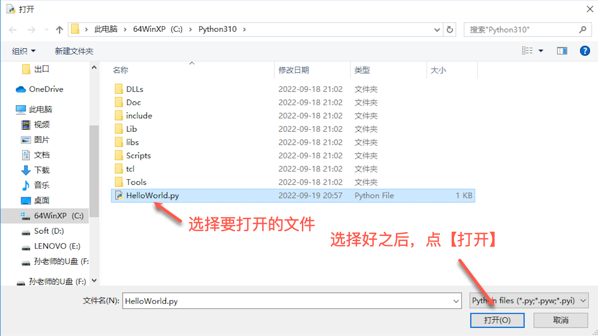
-
修改代码，之后再运行即可：
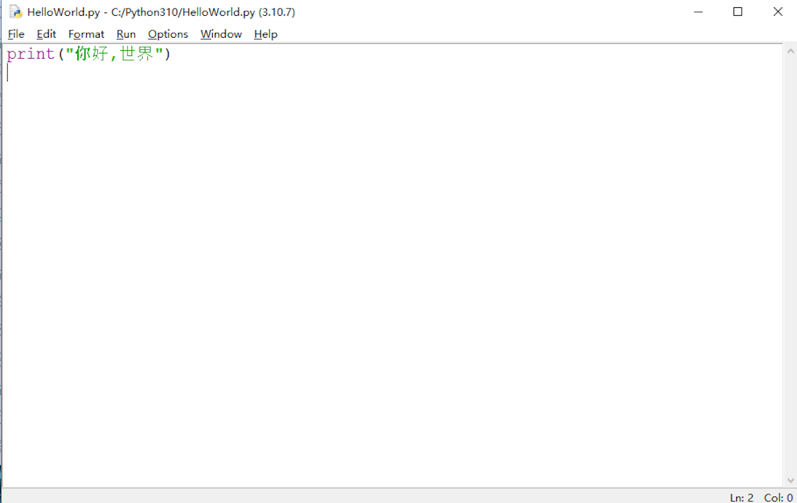
对于一个的程序员来讲，找到一个强大的集成开发环境是必不可少的先决条件。目前有几款比较流行的集成开发工具都支持Python编程，比如微软的Visual Studio Code (简称VS Code)，或者JetBrains的PyCharm， 这些都是很强大且专业的工具。
有兴趣的同学可以点击下列链接了解上述提到的工具：
总结
我们已经把第一个Python程序运行起来了，同时出了解了两种不同的编程环境。同学们可以自由发挥，用print函数输出一些其它内容，注意要用引号引上。
可以尝试把下列代码通过文本式编程编写并运行，看看我们能看到什么？
注：两个"""之间的内容可以不用写， 且不要直接复制粘贴到交互式的环境中！
"""
第一个海龟画图程序：
1. 注意语句的缩进
2. 可以把range后面括号里的值改成其它数值
3. 可以把left后面括号里的值改成其它数值
4. 可以把left替换成right
"""
import turtle as t
colors = ['red', 'green', 'orange', 'blue']
for i in range(100):
t.color(colors[i%4])
t.forward(i)
t.left(90)
类型和变量
一个计算机程序是由算法+数据结构组成，在我们编写完程序之后，在运行它之前，它仅仅是一段静态的代码，只是步骤和方法的描述，并没有真正地帮我们解决问题。只有在运行起来之后，才能开始做事情，就像一副写在书上的《西红柿炒鸡蛋》的菜谱，我们光去看它是没有用的，只有我们买好原材料（西红柿和鸡蛋）之后，去厨房真正地去做它才能最终吃到好吃的西红柿炒鸡蛋。
细心的同学应该已经发现了，如果把程序比做菜谱，那么原材料（西红柿和鸡蛋）又应该是什么的比喻呢？实际上讲，我们编写的程序就是为了用来处理数据, 上一段中提到的原材料就是数据的比喻，而当程序运行起来并开始处理数据之后，它就从静态变为了动态，那么这个动态运行活动就叫做进程：
进程 = 程序 + 数据
process = program + data
或者
进程 = 算法 + 数据结构 + 数据
process = algorithm + data structure + data
那么什么是数据呢？你可能第一个想到的就是数学里学到的数值，如1，2，3...43.23，50，1000等等， 其实你的理解并不是错的，只是仅仅列出了数据的其中一种类型。
计算机中的数据不仅仅是狭义上的数字，还可以是具有一定意义的文字，字母，数字符号的组合、图形、图像、音频、视频等等。总之，根据百度百科的解释，数据是事实和观察的结果，是对客观事物的逻辑归纳，是用来表示客观事物的未经加工的原始素材。
每一种编程语言都有自己内建的基本数据类型，所以我们学习Python的第一个重要的内容就是基本数据类型。
基本数据类型Basic DataTypes
整型int
整型，英文为integer，是指没有小数部分的数值型数据，比如1，2，3，100，44221等等，但是1.0， 2.0， 10.0这些数值则不是整型，因为它们都带有小数部分，即使他们和整数部分的值大小相等。一个integer是集合 Z = {..., -2, -1, 0, 1, 2, ...} 中的一个数。在Python中，用int来表示整型的类型名，它是Python中唯一的一个整型类型，可以处理任意大小的整数。
可以在IDLE中直接输入一个整型数据，再回车:
>>>1
1
>>>2
2
>>>100
100
>>>888888888888888888888
888888888888888888888
Python中同样可以支持二进制、八进制和十六进制的表示法，如0b1000(二进制，换算成十进制为8)，0o742(八进制，换算成十进制为482)， 0xFAE(十六进制，换算成十进制为4014)。其中0b、0o和0x分别为二进制、八进制和十六进制的前缀，如果不写的话，二进制和八进制会被当做十进制处理，十六进制则会报错。
>>>0b1000
8
>>>0o742
482
>>>0xFAE
4014
浮点型float
浮点型，英文为float，是指具有小数部分的数值型数据，比如1.414、3.1415926、2.718281828459045、4.000等等。在Python中，用float来表示浮点型的类型名，它是Python中唯一的一个浮点型类型，可以处理任意精度的浮点数。
>>>1.414
1.414
>>>3.1415926
3.1415926
>>>2.718281828459045
2.718281828459045
>>>4.000
4.0
Python中的浮点型支持十进制和指数型两种表示法，指数型也叫科学记数法，属于超纲内容，这里就不做过多介绍了，感兴趣的同学可以自行研究一下。
字符串str
字符串，英文为string，是指由文字、字母、数字以及一系列符号组成的一串字符，这些字符由单引号或者双引号括起来，比如“abc”、‘banana’、‘1000’等等。在Python中，用str来表示字符串的类型名。需要特别注意的是，只要用引号括起来之后，就是字符串，即使里面的字符看起来看是一个整型或者浮点型。
>>>“abc”
'abc'
>>>'banana'
'banana'
>>>'1000'
'1000'
如果在字符串中需要用到引号("或')的话，可以用转义的方式(\'或\")，或者在需要用到单引号的时候，用双引号把字符串括起来，反之亦然:
>>>'I\'m a student.'
"I'm a student."
>>>"I\'m a student."
"I'm a student."
布尔型bool
布尔型，英文为boolean，用来描述真假的一种数据，也叫逻辑型，它只有两个值: True 和 False。这里要注意一定是只有首字母大写，如果写成了true、flase、TURE或者是FaLSe都是错误的。在Python中，用str表示布尔型的类型名。
>>>True
True
>>>False
False
如果输入错误，会报错，如输入true:
Traceback (most recent call last):
File "<stdin>", line 1, in <module>
NameError: name 'true' is not defined
在Python中，bool类型其实是int类型的子类型，一般情况下，False就是0, True就是1；但是所有的非0的数值都可以认为是真逻辑值，这一点我们会在下一章节中详细说明。
空值None
空值，英文为None，是Python中一个很特殊的类型，它只有一个值，即None，表示空对象，什么都没有。但是数据为空并不是空值，比如空字符串""，它是字符串类型，并不是空值类型。在Python中，用NoneType表示空值的类型名。
>>>None
>>>
>>>""
''
空值并不是一个没有意义的类型，相反，需要用到它的地方有很多。比如，调用函数的时候，不想给某个参数传递值，但是这个参数没有默认的值，所以传值是必须的，那么就可以把空值传给它。关于这一点，我们以后遇到的时候，结合实际用法就可以理解得更好。
变量Variables
也许你已经在数学中学习过了有关未知数的概念，那么你对变量已经有了初步的接触，如下面的方程：
\[5x+(4 \times 5)-19=46\]
我们可以经过解方程得到\(x\)的值为9，然而这里的\(x\)是一个固定的值，在解方程之前它只是个未知数，只有解开方程之后才知道它的值是多少。
然而，Python中变量更像是初中要学习的函数里的定义域:
\[ y=x^2+2x+1 \]
或者
\[ f(x)=x^2+2x+1 \]
这里的\(x\)是一个变化的值，随着\(x\)的变化，\(y\)或者函数\(f(x)\)的值也会变化。但实际上，这里的\(x\)更加准确的概念应该是参数(parameters)，参数和变量还是不同的，参数是要配合函数来一起使用的，但是变量是独立的，可以单独去发挥作用。
在计算机编程中，变量就是一个数据的载体，也就是一块用来保存数据的内存空间，它可以被读取和修改。一个变量有两个最基本的要素:名字和类型。
我们可以把变量想像成一个用来存放数据的容器，像下图一样:

他在内存中的表现是这样的:
上图中的a就是变量的名字，在Python中，变量的类型不是在声明它的时候给出，而且会根据我们赋给它的值变化，比如a = 1，这时变量a的类型是整型int，如果我们重新给它赋值a="apple"，那它的类型就变成了字符串str；我们也可以通过一些内建函数来改变它的类型，这一点我们后面很快就会讲到。
变量命名
每一个变量都需要提前定义，首先要给它取一个名字，方便我们在后面使用它。变量的命名是要遵循下列规则的：
- 变量的名字由字母、下划线
_和数字组成，但是不能以数字开头。这里的字母不单单是26个英文字母，它指的是在Unicode(也被称作万国码)字符集里的所有字母，包括中文、英文、日文、希腊字母、德文等等，范围非常广，但是像@、#、$这些字符是不能出现在变量名中的，我们强烈建议起名的时候只用英文字母。 - 变量的名字是大小写敏感的，比如
A和a是两不同的变量。 - 变量的名字不要使用Python中已经保留的关键字，也不要用自定义的函数、类名。
我们可以通过下面的方式查看Python中有哪些保留的关键字:
>>>import keyword
>>>keyword.kwlist
['False', 'None', 'True', '__peg_parser__', 'and', 'as', 'assert', 'async', 'await', 'break', 'class', 'continue', 'def', 'del', 'elif', 'else', 'except', 'finally', 'for', 'from', 'global', 'if', 'import', 'in', 'is', 'lambda', 'nonlocal', 'not', 'or', 'pass', 'raise', 'return', 'try', 'while', 'with', 'yield']
有关我自定义函数和类名的限制，我们以后会讲到。
变量赋值
可以通过执行赋值表达式来修改变量中存储的值，Python中的赋值运算符为=，这个等号并不是我们数学上的“等于”，千万不要混淆。给变量赋值的语法为:
变量 = 值
变量 = 变量
变量 = 表达式
变量 = 函数返回值
在赋值的时候，变量永远要写在左边，右边是要赋与它的值。
>>>a = 1 #直接用值给变量赋值
>>>print(a)
>>>1
>>>b = a #用变量的值给变量赋值
>>>print(b)
>>>1
>>>c = a + b #用表达式给变量赋值
>>>print(c)
>>>2
>>>a = a + 1 #同样是用表达式给a赋值
>>>print(a)
>>>2
>>>d = str(a) #用函数返回值给变量赋值
>>>print(d)
>>>'2'
看到上面的例子，你是不是对于a = a + 1不太理解？没关系，我来给你解释：
赋值表达式在执行过程中，是先要执行赋值符=右边的代码的，当右边的代码执行完并得到结果之后，就会把这个结果赋值给赋值符=左边的变量。所以在a = a + 1中，最初变量a存储的值为1，先是使用了变量a，把它加了1之后得到2，再把字面量值2重新赋值给了变量a。
总之，变量是一种方便使用的占位符，用于引用计算机的内存地址来存储值。
运算符和表达式
运算符是用来组成表达式的重要元素，会对表达式的结果产生影响。
表达式可以直接用来执行，并通过运算会得到一个结果，但是这个结果马上就会补缓存释放且不再存在，所以在编程过程中，表达式要配合变量来使用。
运算符 Operators
我们这里提到的运算符不仅仅是在数学中学到的加、减、乘、除， Python提供了大量的强大的运算符来帮助我们进行运算，这里我们先介绍下面三种类型的运算符（按优先级排列）：
算术运算符 Arithmetic Operator
| 运算符 | 说明 |
|---|---|
** | 幂运算（指数运算） |
+ - | 正负号（正号可省略） |
* / % // | 乘、除、模（取余）、整除 |
+ - | 加、减 |
位运算符 Bit Operator
| 运算符 | 说明 |
|---|---|
~ | 按位取反 |
>> << | 右移 左移 |
& | 按位与 |
^ | | 按位异或、按位或 |
关系运算符（比较运算符）Relational Operator
| 运算符 | 说明 |
|---|---|
<= < >= > | 小于等于、小于、大于等于、大于 |
== != | 等于、不等于 |
逻辑运行符 Logic Operator
| 运算符 | 说明 |
|---|---|
not | 逻辑非 |
and | 逻辑与 |
or | 逻辑或 |
需要说明的是，上述前三种运算符的优先级为: 算术运算符>位运算符>比较运算符>逻辑运行符，而的位运行符中的按位取反~的优先级和正负号一样，低于幂运算**，高于其它算术运算符。
完整的运算符列表以及优先级可查看附录-完整运算符
表达式 Expression
表达式是由字面量的值、变量等等与运算符组成的运算式，每一个表达式最终都会等到一个确切的字面量的值。
有关字面量的解释，可以查看附录-字面量
在Python中，常用的表达式有算术表达式、关系表达式（或者叫比较表达式）和逻辑表达式。
算术表达式 Arithmetic Expression
Python中的算术表达式和数学中算式很像，只是我们不需要在后面再写个等号并给出结果。
>>>1 + 1
2
>>>1 - 1
0
>>>1 * 2
2
Python中的除法运算/得到的结果一定是一个浮点型的数值:
>>>10 / 5
2.0
Python中的整除和取余分别用来得到数学中除法运算的商和余数，比如：
\[10 \div 3 = 3 \ldots 1\]
取余运算%和整除运算//不仅仅适用于整型数值，也适用于浮点型数值，只要在参与运算的数值里，有一个浮点型，那么结果一点是一个浮点型数值。
>>>10 // 3
3
>>>10 % 3
1
>>>10.0 // 3
3.0
>>>10.0 % 3
1.0
>>>18.32 // 2.51
7.0
>>>18.32 % 2.51
0.7500000000000018
注: 至于上面的余数为什么出现了0.7500000000000018，我们后面会讲到。
在使用算术表达式的时候，一这要注意运算符的优先级关系，如果搞不清楚优先级，可以使用圆括号来确保运算的执行顺序。
比如在数学中的:
\[\lbrace[(3 + 4) \times 5-6]+7 \rbrace \times 8\]
应该写成:
>>>(((3 + 4) * 5 - 6 ) + 7) * 8
288
这一点同样适用于关系表达式和逻辑表达式。
在Python中，字符串也能进行加法+和乘法*运算，加法运算只能发生在两个字符串之间,运算结果为两个字符串连接在一起之后的新字符串；而乘法运算是只能由字符串和整型参与，比如"abc" * 2，结果为'abcabc'
>>>"abc" + "def"
'abcdef'
>>>"def" + "abc"
'defabc'
>>>"a" * 10
'aaaaaaaaaa'
关系表达式 Ralational Expression
关系表达式，也可以被叫做比较表达式，通过关系运算符将两个值连接到一起得到的一种表达式，用来运算这一关系是否成立，一个关系表达式的结果只有两个值True和False。
在使用关系表达式的时候，要注意数据的类型，一般情况下，整型和浮点型之间的比较没有限制，也可以和布尔型进行比较（基本不会用到），但是它们都不能与字符串进行比较:
>>>3 > 2
True
>>>4 < 2
False
>>>5.3 > 3
True
>>>True > False
True
>>>False > -1
True
字符串之间则是按照字节逐个去比较的，比如下面三个字符串'16'、'161'和'8'，先比较第一个字符，分别为'1'、'1'、'8'，其中'8'比其它两个都大，所以'8'是三个中最大的字符串；在其余两个字符串中，前面两个字节均为'1'和'6'，所以还要继续比较下一个字节的大小，但是第一个字符串只有两个字节，而第二个字符串还有第三个字节，所以第二个字符串比第一个字符串要大。根据以上分析，下面三个字符串的大小顺序为'8'>'161'>'16'。
>>>'16' < '161'
True
>>>'161' > '8'
False
两个字符串的大小是根据它们在字符集中的位置判断的，暂时我们只需要下表即可。
| 字符 | 位置 |
|---|---|
'0'~'9' | 48~57 |
‘A’~'Z' | 65~90 |
‘a’~‘b’ | 97~122 |
从上表可以看出，即使字母a是小写的，但是它并不“小”，在字符串中，它要大于大写字母A。当我们不确定某个字符在字符集中的位置的时候，可以调用函数ord()来查看，有关这一内建函数，我们会在后面章节详细学习:
>>>ord(‘A’)
65
逻辑表达式 Logic Expression
当我们用两个关系表达式和逻辑运算符组成一个逻辑表达式时，它的结果也是只有两个True和False:
>>>5 > 3 and 4 < 6
True
>>>5 > 6 or 6 < 7
True
>>>7 > 4 and 3 < 1
False
>>>not (5 > 6)
True
对于关系表达式，也可以多个值一起比较，但不建议用，在这里还是建义大家用逻辑表达式来代替:
>>>5 < 6 > 2
True
>>>5 < 6 and 6 > 2 #与上式等价
True
假如，假和爸爸去看电影，检票员说：”你们两个必须都有票才能进“，那么这里用的就是and，如果检票员说：”你们两个只要有一发张票就可以进入“，那么这里用的就是or。
我们可以用下表来熟悉两个关系表达式的结果在逻辑表达式中的运算情况
| 表达式a | 表达式b | and运算 | or运算 | not a运算 |
|---|---|---|---|---|
True | True | True | True | False |
True | False | False | True | False |
False | True | False | True | True |
False | False | False | False | True |
在Python中，还有一种特别有意思的概念，也是我们接下来要讲的:短路逻辑，它的意思可以理解成在逻辑表达式中，运算符右边部分的运算被短路了:
在a and b表达式中，如果a的值为True，那么结果为b的值，否则结果直接为a的值
>>>5 and 6
6
>>>5 < 4 and 6 > 1 #这里关系表达式“6 > 1”被短路了，并没有进行运算
False
>>>False and 6 #这里6被短路了，并没有被运算
False
在a or b表达式中，如果a的值为True，那么结果为a的值，否则结果直接为b的值
>>>5 or 6 #这里6被短路了，并没有被运算
5
>>>5 > 4 or 6 < 1 #这里关系表达式“6 > 1”被短路了，并没有进行运算
True
>>>False or 6
6
在上一章节，我们提到过，任何非0数值均可被认为是真逻辑值，这一说法可以扩展到其它基本类型:
| 类型 | 假逻辑值 | 真逻辑值 |
|---|---|---|
int | 0 | 非0整数 |
float | 0.0、0.00等等 | 非0.0浮点数 |
str | '' | 非空字符串 |
NoneType | None | 无 |
>>>'' and True
''
>>>None and False
>>>
表达式与变量
在本章节开篇时，我们提到，表达式的结果被输出之后就会被缓存释放了，所以为了后面继续使用表达式运算出来的结果，需要配合变量来使用。
>>>a = 5 + 7
>>>print(a)
12
>>>b = 4 > 3 and 5 < 1
>>>print(b)
False
>>>c = a and b
>>>print(c)
False
有关变量的详细内容，如果还有不清楚的地方，可以回到上一章节中复习：变量。
位运算
程序中的所有数在计算机内存中都是以二进制的形式储存的。位运算就是直接对整数在内存中的二进制位进行操作。所以要先了解二进制。
另:本章节详细分析部分有一定难度，建议只学习位运算符的使用方法即可。
二进制
17世纪至18世纪的德国数学家莱布尼茨，是世界上第一个提出二进制记数法的人。用二进制记数，只用0和1两个符号，无需其他符号。这一计数方法充分结合了数字电子电路系统的高低电平，在一些系统中，高电平表示1，低电平表示0，而有的系统则是高电平表示1，低电平表示2。这也是为什么低级语言编写的程序不能跨平台使用的原因。下面两个图可以简单表示两种不同系统的高低电平情况:


进制转换
十进制转二进制
一个十进制数转换为二进制数要分整数部分和小数部分分别转换，最后再组合到一起。
整数部分采用 "除2取余，逆序排列"法。具体做法是：用2整除十进制整数，可以得到一个商和余数；再用2去除商，又会得到一个商和余数，如此进行，直到商为小于1时为止，然后把先得到的余数作为二进制数的低位有效位，后得到的余数作为二进制数的高位有效位，依次排列起来。例：125:

经过运算，十进制的125，转换成二进制之后为1111101。
小数部分要使用“乘2取整法”。即用十进制的小数乘以2并取走结果的整数(必是 0或1)，然后再用剩下的小数重复刚才的步骤，直到剩余的小数为0时停止，最后将每次得到的整数部分按先后顺序从左到右排列即得到所对应二进制小数。例如，将十进制小数 0.8125 转换成二进制小数过程如下:

二进制转十进制
二进制转换成十进制是要按位进行\(2^{x-1}\)运算，再加到一起，比如:
\[(111111)_2 = 2^5 + 2^4 + 2^3 + 2^2 + 2^1 + 2^0 = 63\]
或:
\[(101011)_2 = 2^5 + 2^3 + 2^1 + 2^0 = 43\]
位运算 Bitwise
| 运算符 | 说明 |
|---|---|
~ | 按位取反 |
>> << | 右移 左移 |
& | 按位与 |
^ | | 按位异或、按位或 |
按位取反
按位取反运算符：对数据的每个二进制位取反,即把1变为0,把0变为1:
>>>~6
-7
>>>~-8
7
~x 类似于 -x-1，但是实际情况远远要复杂得多，有兴趣的同学可以查看附录进行学习附录-按位取反
左移、右移
位运算中，左移n位相当于原数整除2n，左移n位相当于原数乘以2n，但是位移运算效率更高。
>>>15>>2
3
>>>15<<2
60
假设我们的一台简易计算机只用一个字节(byte，即8位)来存储数值，那么15的二进制应该为0000 1111，所以左移2位之后变为0000 0011，即3; 左移2位之后变成0011 1100，即60。
按位与
按位与运算是将两个数值的二进制按位进行逻辑与运算，只有同时为1时才能得到1，否则结果都是0。
>>>15 & 24
8
| 15: | 0 | 0 | 0 | 0 | 1 | 1 | 1 | 1 |
| 24: | 0 | 0 | 0 | 1 | 1 | 0 | 0 | 0 |
| & | 0 | 0 | 0 | 0 | 1 | 0 | 0 | 0 |
按位或
按位或运算是将两个数值的二进制按位进行逻辑或运算，只有同时为0时才能得到0，否则结果都是1。
>>>15 | 24
31
| 15: | 0 | 0 | 0 | 0 | 1 | 1 | 1 | 1 |
| 24: | 0 | 0 | 0 | 1 | 1 | 0 | 0 | 0 |
| | | 0 | 0 | 0 | 1 | 1 | 1 | 1 | 1 |
按位异或
按位异或运算是将两个数值的二进制按位进行逻辑异或运算，当值相同是得到0，不同时则得到1。
>>>15 | 24
23
| 15: | 0 | 0 | 0 | 0 | 1 | 1 | 1 | 1 |
| 24: | 0 | 0 | 0 | 1 | 1 | 0 | 0 | 0 |
| ^ | 0 | 0 | 0 | 1 | 0 | 1 | 1 | 1 |
总结
位运算是计算机编程中很重要的一种运算方式，这里我们暂时了解这些就足够了。
常用内建函数
在今后的学习过程中，我们会用到很多内建函数，比如标准的输入输出，类型转换等等。内建函数实现了一些常用的功能，可以直接拿来使用。
| 函数名 | 功能 | 返回值 |
|---|---|---|
print() | 向终端输出信息 | 无 |
input() | 通过终端输入数据并返回结果 | 有 |
int() | 将参数中的值转换成整型并返回结果 | 有 |
float() | 将参数中的值转换成浮点型并返回结果 | 有 |
str() | 将参数中的值转换成字符串并返回结果 | 有 |
eval() | 将参数中字符串转换成一段可执行的表达式并返回结果 | 有 |
chr() | 返回整型参数在Uncode 中对应的字符 | 有 |
ord() | 返回字符参数在Uncode 中对应的码位 | 有 |
print()
我们在hello, world中已经使用过了print()函数:
>>>print("hello, world!")
hello, world!
print()函数的功能就是将参数的内容打印出来:
- 对于实际的值，原样打印，字符串要用引号（如上）
>>>print(1)
1
>>>print(1.4)
1.4
>>>print(True)
True
- 对于变量，打印变量内存储的值
>>>a = 4
>>>print(a)
4
>>>name = "Chris"
>>>print(name)
Chris
- 也可以打印函数返回的值
>>>print(chr(65))
A
print()函数是默认以\n结束，也就是说，当打印完信息之后自动会换行，如果想要不自动换行，可以给参数end传一个别的值:
>>>print(123);print(456)
123
456
>>>print(123, end = "$");print(456)
123$456
print()函数也可以打印多段值，默认用' '隔开，如果想要换成其它分隔符，可以给参数sep传入其它值:
>>>a = 'A'
>>>b = 'B'
>>>c = 'C'
>>>print(a,b,c)
A B C
>>>print(a,b,c,sep = "&")
A&B&C
占位符
在用print()函数向终端输出信息时，可以使用占位符来格式化：
| 占位符 | 描述 | 说明 |
|---|---|---|
%d | 整型占位符 | 无 |
%f | 浮点型占位符 | 默认保留小数点后6位，如果要自定义保留n 位，可以写成%.nf，结果会四舍五入 |
%s | 字符串占位符 | 无 |
>>>print("%s is a student." %"Tom")
Tom is a student.
>>>name = "Jerry"
>>>print("%s is a student." %name)
Jerry is a student.
>>>age = 10
>>>print("He is %d years old." %age)
He is 10 years old.
>>>height = 1.46
>>>print("His height is %.1f." %height)
His height is 1.5.
#有多个占位符时，需要用括号
>>>print("%s is a student. He is %d years old. His height is %.1f." %(name, age, height))
Jerry is a student. He is 10 years old. His height is 1.5.
#如果不填充占位符，那么就会原样输出。
>>>print("%s is a student. He is %d years old. His height is %.1f.")
%s is a student. He is %d years old. His height is %.1f.
input()
input()函数可以接收标准输入的数据，并且把数据以字符串格式返回，括号里的参数会被输出到终端作为提示用，这里参数的用法和print()一致:
>>>input()
# 下面一行是输入的内容，在输入时会有光标闪烁
1
# 下面一行是input()函数返回的值
'1'
>>>input("Input a value:")
# 先输出提示的参数，然后再在后面输入内容，在输入时会有光标闪烁
Input a value:1
'1'
由于input()是有返回值的函数，所以当我们输入了值之后，如果没有把返回的值赋值给变量，那么这个值会马上被缓存释放，并不再存在，所以我们要用一个变量来接收这个返回值:
>>>a = input("Input a:")
# 下面一行是输入的内容，在输入时会有光标闪烁
Input a:1
>>>print(a)
'1'
练习: 从终端输入两个值，分别赋值给变量a和b，并尝试进行计算下列算式，查看结果:
>>>a = input("Input a:")
Input a: #输入值给a
>>>b = input("Input b:")
Input b: #输入值给b
#尝试下列算式：
>>>a + b
>>>a - b
>>>a * b
>>>a / b
int()和float()
假如你已经尝试了上述代码，给a 赋值了1，给b 赋值了2，那么你会发现加法运算的结果是'12'，而其它运算都报了错误:
Traceback (most recent call last):
File "<pyshell#71>", line 1, in <module>
a-b
TypeError: unsupported operand type(s) for -: 'str' and 'str'
...
TypeError: can't multiply sequence by non-int of type 'str'
...
TypeError: unsupported operand type(s) for /: 'str' and 'str'
相信细心的同学已经想到了原因:用input()函数通过终端输入的内容都会以字符串的形式返回出来，但是字符串与字符串之间并没有-、*、/的运算，而+运算只是把两个字符串连接到一起。
为了能够进行数学运算，我们需要用到int()和float()将返回的字符串转换成数值：
- int(): 将输入的参数转换成整型，可以输入的参数为<整型、浮点型和整数型的字符串>
>>>int(1)
1
>>>int(1.5)
1
>>>int("32")
32
>>>int("2.2")
Traceback (most recent call last):
File "<pyshell#74>", line 1, in <module>
int("2.2")
ValueError: invalid literal for int() with base 10: '2.2'
# int()是有返回值的函数，需要用变量接收返回值:
>>>a = int("32")
>>>print(a)
32
- float():将输入的参数转换成浮点型，可以输入的参数为<整型、浮点型和数值型的字符串>
>>>float(3)
3.0
>>>float(1.2)
1.2
>>>float("2.2")
2.2
>>>float("2.2.2")
...
Traceback (most recent call last):
File "<pyshell#78>", line 1, in <module>
float("2.2.2")
ValueError: could not convert string to float: '2.2.2'
# float()是有返回值的函数，需要用变量接收返回值:
>>>a = float("1.5")
>>>print(a)
1.5
函数之间是可以嵌套的:
>>>a = int(float("2.2"))
>>>print(a)
2
练习: 重新练习下面练习题，从终端输入两个值，分别赋值给变量a和b，并尝试进行计算下列算式，查看结果
要求：1. 第一次尝试给 a和b 分别输入整型
2. 第二次尝试给 a和b 分别输入浮点型
>>># input a 代码，由学生练习时填写
>>># input b 代码，由学生练习时填写
#尝试下列算式：
>>>a + b
>>>a - b
>>>a * b
>>>a / b
str()
str()用来将输入的参数转换成字符串并返回:
>>>str(1)
'1'
>>>a = str(1)
>>>print(a)
>>>a
'1'
在IDLE中，用交互环境直接输入变量名字，会打印出该变量的值，这个和 print()是有区别的，如果用print()打印出来的是用户能理解的数据，而直接输入变量名字，打印出来的是解释器能理解的数据。但是在文本编程环境中，只能用print()函数。
eval()
eval() 函数用来执行一个字符串表达式，并返回表达式的值。
>>>a = 5
>>>b = eval("a + 5")
>>>print(6)
b
如果字符串表达式中用到的变量不存在，就会报错:
>>>c = eval("d + 3")
Traceback (most recent call last):
File "<pyshell#85>", line 1, in <module>
c = eval("d + 3")
File "<string>", line 1, in <module>
NameError: name 'd' is not defined. Did you mean: 'id'?
chr()和ord()
我们可以将这两个函数理解成字典，chr()和ord()的功能是正好相反的，chr()是根据数值查找字符，ord()是根据字符查找它所在位置。
>>>chr(65)
'A'
>>>ord('A')
65
>>>ord("我")
25105
返回值
超声波测距
const int TrigPin = 2; //引脚号自行更新
const int EchoPin = 3; //引脚号自行更新
int distance;
void getDistance(){
digitalWrite(TrigPin, LOW);
delayMicroseconds(2);
digitalWrite(TrigPin, HIGH);
delayMicroseconds(10);
digitalWrite(TrigPin, LOW);
distance = pulseIn(EchoPin, HIGH) / 58.0;
}
呼吸灯
const int potPin = A0;
const int ledPin = 6;
void setup(){
Serial.begin(9600);
}
void loop(){
int potVal = analogRead(potPin);
potVal = potVal/10;
Serial.println(potVal);
for (int i = 0; i <= 255; i++){
analogWrite(ledPin, i);
delay(potVal);
}
for (int i = 255; i >= 0; i--){
analogWrite(ledPin, i);
delay(potVal);
}
}
红外线遥控
#include <IRremote.h>
const int irPin = 12;
IRrecv irRecv(irPin);
decode_results results;
void setup(){
irRecv.enableIRIn();
Serial.begin(9600);
}
void loop(){
if (irRecv.decode(&results)){
Serial.println(results.value, HEX);
switch (results.value){
case 0xFF18E7:
{
Serial.println(1);
break;
}
case 0xFF38C7:
{
Serial.println(2);
break;
}
}
irRecv.resume();
}
}
舵机
#include <Servo.h>
const int serPin = 3;
Servo myServo;
void setup(){
myServo.attach(serPin);
}
void setup(){
myServo.write(90);
delay(1000);
myServo.write(135);
}
红外线智能小车
#include <IRremote.h>
const int leftPin1 = 8; //AIN1连接引脚8
const int leftPin2 = 7; //AIN2连接引脚9
const int rightPin3 = 4; //BIN1连接引脚4
const int rightPin4 = 3; //BIN2连接引脚3
const int leftSpeed = 6; //PWA连接引脚6
const int rightSpeed = 5; //PWB连接引脚5
const int irPin = A0;//红外遥控传感器信号引脚连接主板引脚 A0
const int maxspeedPwm = 255;//PWM最大值
const int minspeedPwm = 90; //PWM最小值
const int speedStep = 10; //加速或减速时 PWM 的增减幅度
int intSpeedPwm = 130; //设置小车运行的初始速度
IRrecv irRecv(irPin);
decode_results irResults;
void setup(){
pinMode(leftPin1, OUTPUT);
pinMode(leftPin2, OUTPUT);
pinMode(rightPin1, OUTPUT);
pinMode(rightPin2, OUTPUT);
irRecv.enableIRIn();
Serial.begin(9600);
}
void loop(){
if (irRecv.decode(&irResults)){
Serial.println(irResults.value, HEX);
switch (irResult.value){
case 0xFF10EF:{ //左转
turnLeft();
break;
}
case 0xFF5AA5:{ //右转
turnRight();
break;
}
case 0xFF18E7:{ //前进
forward();
break;
}
case 0xFF4AB5:{ //后退
backward();
break;
}
case 0xFF38C7:{ //停止
pause();
break;
}
case 0xFFA25D:{ //减速
if(intSpeedPwm - speedStep < minSpeedPwm){
intSpeedPwm = minSpeedPwm;
}else{
intSpeedPwm -= speedStep;
}
break;
}
case 0xFF629D:{ //加速
if(intSpeedPwm + speedStep < maxSpeedPwm){
intSpeedPwm = maxSpeedPwm;
}else{
intSpeedPwm += speedStep;
}
break;
}
case 0xFFE21D:{ //全速
intSpeedPwm = maxSpeedPwm;
break;
}
}
analogWrite(leftSpeed, intSpeedPwm);
analogWrite(rightSpeed, intSpeedPwm);
irRecv.resume();
}
}
/*前进*/
void forward(){
digitalWrite(leftPin1, 1);
digitalWrite(leftPin2, 0);
digitalWrite(rightPin3, 1);
digitalWrite(rightPin4, 0);
}
/*后退*/
void backward(){
digitalWrite(leftPin1, 0);
digitalWrite(leftPin2, 1);
digitalWrite(rightPin3, 0);
digitalWrite(rightPin4, 1);
}
/*左转*/
void turnLeft(){
digitalWrite(leftPin1, 0);
digitalWrite(leftPin2, 0);
digitalWrite(rightPin3, 1);
digitalWrite(rightPin4, 0);
}
/*右转*/
void turnRight(){
digitalWrite(leftPin1, 1);
digitalWrite(leftPin2, 0);
digitalWrite(rightPin3, 0);
digitalWrite(rightPin4, 0);
}
/*停止*/
void pause(){
digitalWrite(leftPin1, 0);
digitalWrite(leftPin2, 0);
digitalWrite(rightPin3, 0);
digitalWrite(rightPin4, 0);
}
/*原地左转*/
void rotateLeft(){
digitalWrite(leftPin1, 0);
digitalWrite(leftPin2, 1);
digitalWrite(rightPin3, 1);
digitalWrite(rightPin4, 0);
}
/*原地右转*/
void rotateLeft(){
digitalWrite(leftPin1, 1);
digitalWrite(leftPin2, 0);
digitalWrite(rightPin3, 0);
digitalWrite(rightPin4, 1);
}
完整运算符
| 运算符 | 描述 |
|---|---|
[] [:] | 下标，切片 |
** | 指数 |
~ + - | 按位取反, 正负号 |
* / % // | 乘，除，模，整除 |
+ - | 加，减 |
>> << | 右移，左移 |
& | 按位与 |
^ \| | 按位异或，按位或 |
<= < > >= | 小于等于，小于，大于，大于等于 |
== != | 等于，不等于 |
is is not | 身份运算符 |
in not in | 成员运算符 |
not or and | 逻辑运算符 |
= += -= *= /= %= //= **= &= ` | = ^= >>= <<=` |
字面量
字面量是用于表达源码中一个固定值的表示法，整数、浮点数和字符串等等都是字符串。比如在下面声名变量语句中:
a = 1
a是声明的变量，那赋值符=后面的1就是字面量。总之，字面量就是没有用标识符封装起来的量，是“值”的原始状态。
按位取反
在学习按位取反之前，我们要先了解原码、反码和补码。
前面提到过，数值在计算机中的以二进制的方式存储的，但是真正在存储时用的都是二进制补码，且在存储之前先要经过原码->反码->补码的转换过程：
对于一个有符号数(即正、负)，它的最高位永远是符号位，0为正数，1为负数。假设我们的一台简易计算机只用一个字节(byte，即8位)来存储数值，那么对于5和-5来说:
原码:
5: 0000 0101
-5: 1000 0101
反码(正数反码即自身，负数则除符号位之外其它各位取反):
5: 0000 0101
-5: 1111 1010
补码(正数补码还是自身，负数则是在反码基础上加1):
5: 0000 0101
-5: 1111 1011
这样设计能够解决加减法不正确的问题
首先，计算十进制的表达式： 1-1=0，看一下原码的计算:
# 原码计算:
0000 0001 + 1000 0001 = 1000 0010
1000 0010转换成十进制之后为-2，这个结果显然是错误的，所以不能直接用原码进行运算。
那么反码会怎样：
# 原码计算:
0000 0001 + 1000 0001
# 反码计算:
0000 0001 + 1111 1110 = 1111 1111
# 转换回原码结果为
1000 0000
1000 0000转换成十进制之后为-0，结果是正确了，但是这个-0看起来又很奇怪，虽然人们可以理解+0和-0是一样的，然而带符号的0并没有什么意义。
使用补码就可以解决上述问题：
# 原码计算:
0000 0001 + 1000 0001
# 反码计算:
0000 0001 + 1111 1110
# 补码计算:
0000 0001 + 1111 1111 = 0000 0000
# 转换回原码结果为
0000 0000
这里有些同学会问，结果不应该是1 0000 0000吗？这里是因为我们假设计算机是用一个字节来存储数值的，一个字节是只有8位的，所以多出的1会被移掉。
现在我们来看一下按位取反是怎么实现的:
-5: 原码:1000 0101 反码:1111 1010: 补码:1111 1011
# 按位取反发生在补码上:
0000 0100
# 由于是正数的补码，和原码是一样的，那么结果就是:
0000 0100 即十进制的4
5: 原码、反码、补码: 0000 0101
# 按位取反后:
1111 1010
# 由于是补码，要先减1得到反码
1111 1001
# 再取反得到原码
1000 0110 即十进制-6